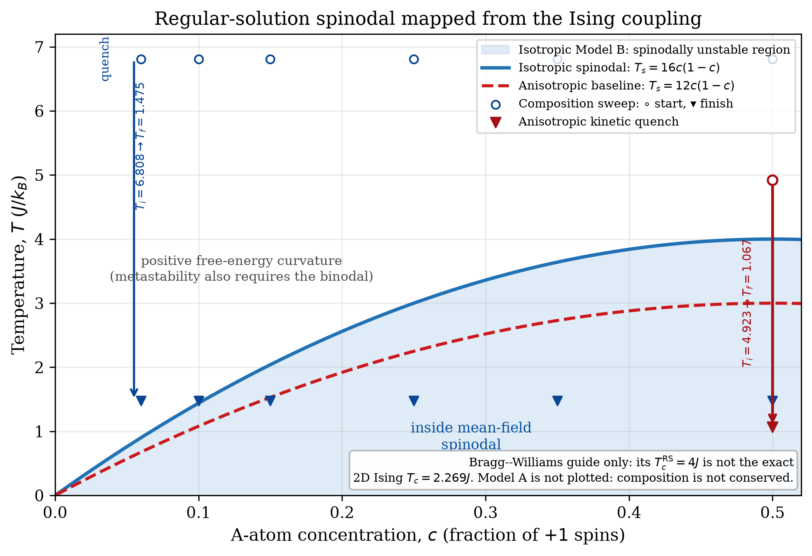

How much can a short simulation tell us about coarsening?
Draft for student review. No academic endorsement or industrial validation claimed.
I'm comparing two simple models of phase ordering, then testing how much the measured growth rate depends on the way I run and analyse them.
The model
Both engines use a two-dimensional Ising lattice. Model A uses Metropolis spin flips; Model B uses Kawasaki exchanges, which conserve composition exactly. Model B also allows different horizontal and vertical couplings.
The problem I'm investigating
The conserved model's measured growth exponent is below the late-stage 1/3 prediction. I want to distinguish finite-time behaviour, finite-size effects and the choice of length measurement before explaining that discrepancy.
What I can check
Tests cover energy bookkeeping, conserved composition, correlation analysis and the regular-solution mapping. The new campaign retains seeds, raw correlations, snapshots and independent replicas.
Current evidence
The completed isotropic study has 64 independent runs: 50:50 and 15:85 mixtures, four lattice widths, eight runs each, to 200,000 sweeps. The larger widths give effective late-window slopes near 0.26, below one-third. Changing the fit window or image-processing steps changes the value. That does not settle the cause.

One question for a reviewer
Is a connected-correlation threshold a useful length measure across both droplet and interconnected morphologies? What additional measurement would make the finite-time/finite-size comparison more convincing?
Scope: a controlled model study, not an alloy-design tool. It omits 3D structure, elastic strain, defects and composition-dependent mobility. Monte Carlo sweeps have not been converted into physical ageing time.